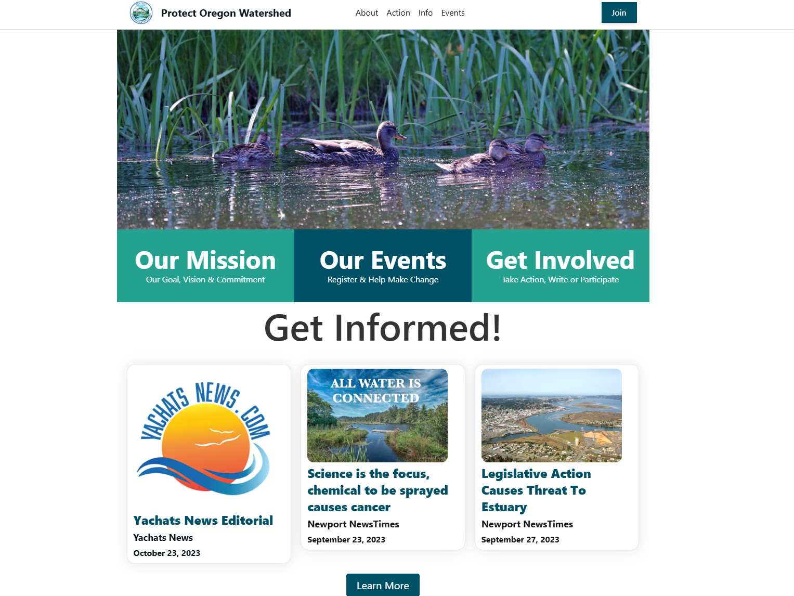

Protect Oregon Watershed
Protect Oregon Watershed is a community based initiative to organize and protect against toxic chemical sprays occurring along the Oregon Coast
-
Developed a full-stack web application, Protect Oregon Watershed, to help communities organize against toxic chemical sprays along the Oregon Coast.
-
Built a dynamic and responsive frontend using Next.js, React, and TypeScript, enhancing user experience and accessibility.
-
Designed and implemented a Flask-based backend with SQLAlchemy and PostgreSQL, enabling efficient data storage and retrieval.
-
Collaborated with a cross-functional team in a fast-paced hackathon environment, successfully delivering a working MVP within the time constraints.
